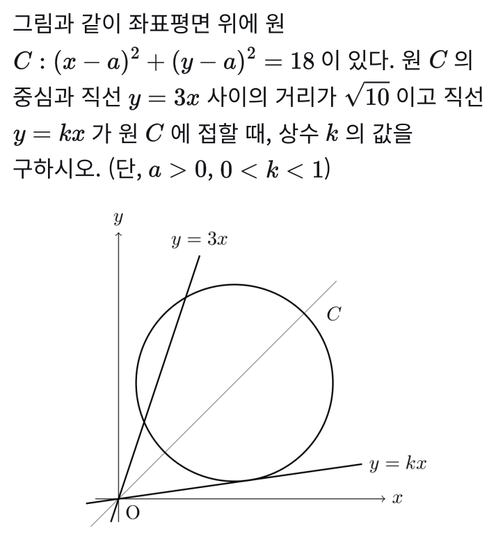
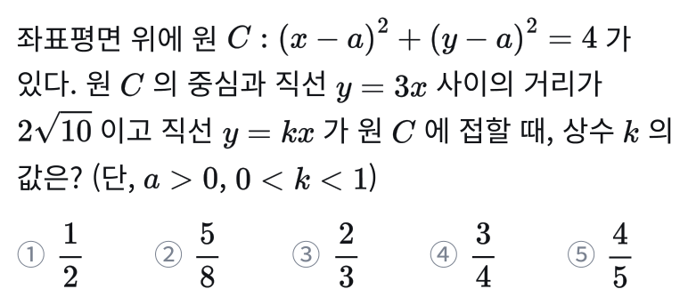
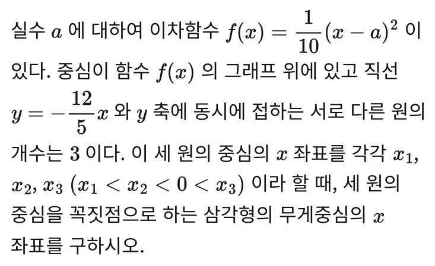
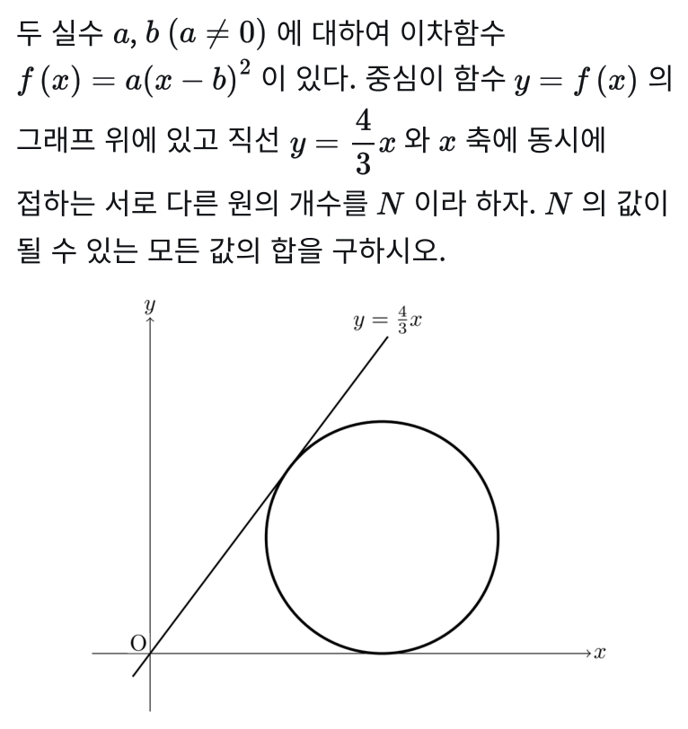

중대부고 1학년 수학,
기록이 남는 내신 수업
중앙대학교사범대학부속고등학교(중대부고) 1학년 수학 시험이 어디서 어떻게 바뀌어 나오는지 분석하고, 매 수업의 과제와 테스트를 문항 단위로 기록해 빈 곳을 찾아 채우는 수업입니다. 학부모님은 휴대폰으로 언제든 확인하실 수 있습니다.
교과서·부교재에서 출제
다룬 문항 (배점 86.7점)
사흘 뒤 테스트 점수 변화
자동 판정 → 학부모 문자
기록이 남는 수업 — 빈 곳을 찾아 채웁니다
수업 한 번이 끝날 때마다 과제 검사와 테스트 결과가 문항 단위로 기록됩니다. 그 기록이 다음에 할 일(보충·변형 문제·오답노트)을 정하고, 학부모님은 휴대폰으로 같은 기록을 보십니다.
한 주는 이렇게 돌아갑니다
학부모 화면 — 휴대폰으로 언제든
테스트 점수 추이를 반 평균과 함께, 시험별 맞은 개수와 틀린 이유, 과제 검사 결과, 보충 예정·이력, 선생님 코멘트.
보충 기준에 얼마나 가까운지 상태 띠로 미리 보입니다. 기준은 학기 중 바뀌지 않아 학생 스스로 예측할 수 있습니다.
한 번 더 미제출이면 보충 대상입니다. 보충을 마치면 0 / 2로 돌아갑니다.
월~금 시간표에서 보충·질문 클리닉을 학부모가 직접 잡고 취소합니다. 보충 문자를 받지 않았어도 시험 대비·질문용으로 예약할 수 있습니다.
보충 기준 — 미리 공개하고, 학기 중 바꾸지 않습니다
| 상황 | 기준 | 결과 |
|---|---|---|
| 과제 미제출 | 1회 | 경고 문자 |
| 과제 미제출 | 2회 연속 | 보충 |
| 과제는 냈지만 푼 문항이 적음 | 푼 문항 70% 미만인 회차가 최근 4회 중 2회 (틀린 문항은 푼 것으로 칩니다) | 보충 |
| 테스트 점수 | 정답률 60% 미만 | 보충 |
| 테스트 점수 하락 | 본인 최근 3회 평균보다 15점 이상 하락 | 보충 |
- 매일 밤 자동 판정. 그날까지의 과제·테스트 기록으로 기준에 걸리는지 확인합니다. 사람이 기억에 의존하지 않습니다.
- 선생님 확인 → 문자. 근거(날짜·점수)와 기준을 적은 문자가 학부모께 갑니다. 같은 일로 두 번 보내지 않습니다.
- 예약이 없으면 3일 뒤 한 번 더 문자, 그래도 없거나 보충에 오지 않으면 선생님이 직접 전화드립니다.
- 보충 완료 = 초기화. 벌이 아니라 회복이 목적입니다. 보충에서 무엇을 다뤘는지도 기록되어 현황에서 다시 볼 수 있습니다.
기록이 만들어 내는 것
틀린 문항은 사라지지 않고 학생별 대기열에 남습니다. 매주 그 학생만의 확인지에 숫자를 바꾼 변형 → 조건을 바꾼 변형 순서로 다시 나오고, 두 번 연속 맞혀야 졸업합니다. 반 전체의 졸업 현황도 봅니다.
기록에서 바로 학생별 오답노트와 유사 문항 학습지가 만들어집니다. 반 전체가 많이 틀린 문항은 공통 복습지로 따로 묶습니다. 손으로 고르지 않으니 빠지는 학생이 없습니다.
집에서 막힌 문제는 휴대폰으로 사진을 올리면 손풀이로 답이 옵니다. 자주 묻는 문제는 교재 번호를 누르면 보관된 손풀이를 바로 볼 수 있고, 시험 뒤에는 문항별 분석 리포트와 학생별 상담 리포트를 드립니다.
9월 25일 테스트에서 반 전원이 틀린 번호가 9개였습니다. 재시험과 보충으로 그 번호를 메운 학생은 사흘 뒤 테스트에서 27점에서 61점으로, 맞힌 문항은 23문항 중 6개에서 19개로 올랐습니다. 테스트는 빈 곳을 찾는 시간이고 보충은 채우는 시간입니다. 기록이 있어야 어디가 빈 곳인지 압니다.
중대부고 1학년 수학 시험은 이렇게 나온다
2025학년도부터 2026학년도 2학기 중간까지 7개 시험의 문항 출처를 교과서·부교재·학력평가 문항과 대조해 확인한 틀입니다.
선택형 60 : 서답형 40
유일하게 고정된 비율입니다. 문항 수는 22~23문항으로 시험마다 조금씩 다르고, 서술형은 문항당 7점으로 2~3문항이 나옵니다. 서술형은 풀이 없이 답만 쓰면 0점입니다.
두 권으로 끝난다
원본은 교과서(미래엔)와 부교재(올림포스 전국연합 기출)입니다. 2026 2학기 중간고사는 출처 확인율 100%였고, 시중 유형서에서 가져온 문항은 확인되지 않았습니다.
그대로 내지 않는다
2026 2학기 중간 23문항 중 원문 그대로 나온 문항은 0개입니다. 숫자·소재만 바꾼 것 9, 조건을 바꾼 것 9, 두 문항을 합친 것 5문항이었습니다.
배점 자리마다 출처가 다르다 — 3층 구조
| 층 | 자리 | 원본 | 바꾸는 정도 |
|---|---|---|---|
| 1층 | 3점대 선택형 · 서답형 앞 세 문항 | 교과서 본문·교사용 자료, 부교재 기본 문항 | 숫자·소재만 바꾼다. 2026 2학기 중간에서 교과서 8문항 27점이 모두 여기였다 |
| 2층 | 4점대 선택형 · 서답형 뒤쪽 · 서술형 | 부교재 변별 문항 | 조건을 바꾸거나, 거꾸로 묻거나, 두 문항을 결합한다 |
| 3층 | 선택형 최고 배점 1~2자리 · 단답형 끝 | 부교재 최상위 난도 문항 | 구조는 유지하고 조건을 가리거나 발판(보기·풀이 과정)을 지운다. 극상 난이도가 여기서 나온다 |
관측된 변형 방식
- 숫자·소재만 바꾸기 — 교과서 자리 전부. 7점 서술형도 숫자만 바꿔 낸 적이 있다.
- 거꾸로 묻기 — 조건과 결론을 맞바꾼다. 변의 길이를 주고 외접원을 묻던 문항을, 외접원 넓이를 주고 삼각형 넓이를 묻는 식.
- 구조 가리기 — 같은 조건을 다른 성질의 말로 숨겨 출발점을 못 알아보게 한다.
- 발판 제거 — 보기 ㄱㄴㄷ를 지우고 최솟값 하나만 묻거나, 빈칸 풀이 과정을 지운다.
- 늘리기 — 고정된 수 하나를 움직이게 하거나 답 후보를 늘린 뒤 최대·최소를 묻는다. 4점 이상 난이도를 올리는 주된 방법.
- 두 문항 결합 — 부교재 문항끼리, 또는 다른 단원의 기본 문항을 얹는다. 5점 이상과 서술형 자리에 온다.
이번 시험 분석 — 23문항 출처·난이도·킬러
시행 2026년 10월 2일 · 범위 평면좌표 · 직선의 방정식 · 원의 방정식 · 도형의 이동 · 집합 · 선택형 14(60점) + 단답형 6(19점) + 서술형 3(21점)
출제 원천 (배점 기준)
부교재 「올림포스 전국연합 기출」 15문항 73점, 교과서 미래엔 본문·교사용 자료 8문항 27점. 미확인 0문항. 선택형 1~5번과 서답형 앞 세 문항이 교과서, 선택형 6번부터와 서답형 4번부터는 전부 부교재입니다.
단원별 난이도 분포 (23문항)
난이도는 하 7 · 중 7 · 상 6 · 극상 3. 집합이 8문항(34.3점)으로 최대 단원이 됐고, 서술형 한 자리(23번)까지 집합입니다. 극상 3문항은 원의 방정식(13·20번)과 도형의 이동(14번)에서 나왔습니다.
극상 난이도 3문항 — 전부 부교재 최상위 문항의 변형
직선 y=x 위의 두 점과 세 점을 지나는 원
선택형 · 5.0점 · 원의 방정식부교재 최상위 문항의 길이 조건을 각의 이등분선 성질로 가려서 냈습니다. 교점 두 개와 원의 방정식까지 손으로 구해야 하는 계산량입니다.
대칭이동과 네 선분의 길이의 합의 최솟값
선택형 · 5.2점(최고 배점) · 도형의 이동부교재 최상위 문항의 보기 ㄱㄴㄷ를 지우고, 고정점이던 B를 직선 위를 움직이는 점으로 바꿔 네 선분의 합을 물었습니다. 늘리기와 발판 제거가 겹친 유일한 문항입니다.
직선과 축에 동시에 접하는 원의 개수
단답형 · 4점 · 원의 방정식부교재 최상위 문항에서 미지수 둘을 하나로 줄이고 조건을 부호 조건으로 바꿨습니다. 중심이 이차함수 그래프 위에 있고 직선과 축에 동시에 접하는 원의 개수를 나누는 구조는 그대로입니다.
이번 시험이 말해 주는 것
교과서 27점은 숫자만 바뀐다. 부교재 73점은 조건이 바뀐다. 극상 3문항은 모두 부교재 최상위 문항의 변형이었고, 준킬러급(8·9·11·12번과 서술형 22·23번)은 상위권 안에서 실수 여부를 갈랐습니다. 어느 책의 어느 문항이 어떻게 바뀌었는지는 상담에서 아이의 시험지로 직접 보여 드립니다.
실제 시험 문제와 수업에서 미리 푼 변형 문제
"교과서와 부교재가 원천이고, 킬러는 부교재 최상위 문항에서 조건이 바뀌어 나온다"는 예측에 따라 원본의 숫자 변형·조건 변형을 직접 만들어 9월 과제와 테스트에 실었습니다. 23문항 중 19문항(86.7점)의 원본 또는 변형을 수업에서 다뤘고, 극상 3문항은 전부 9월 테스트에 변형으로 실렸습니다. 같은 문제가 나온 것이 아니라 풀이의 핵심이 되는 설정이 일치합니다.

0, 0
0, 0

기말고사(12월 9일 예정)에 그대로 가져갈 것
범위는 공통수학2의 명제 · 함수 · 유리함수 · 무리함수입니다. 최종 범위와 날짜는 학교 공지로 확정됩니다. 기말 범위는 처음 배우는 개념이라 8월 명제 예습 테스트에서 반 정답률이 51%였습니다(평소 기본 문항 83%). 한 회차를 놓치면 다음 수업이 들리지 않아, 기준에 걸리면 미루지 않고 바로 보충으로 돌립니다.
교과서는 교사용 자료까지, 부교재는 하·중 난이도 문항까지 봅니다. 7점 서술형이 쉬운 문항의 숫자 변형으로 나온 자리가 있어, 끝까지 쓰는 연습이 점수가 됩니다.
고정된 수 하나를 문자로 풀어 움직이게 하거나, 답 후보를 늘린 뒤 최대·최소로 묻습니다. 원본을 푼 뒤 "이 수가 문자였다면?"을 되묻는 훈련을 합니다.
테스트에서 틀린 문항은 변형으로 두 번 맞힐 때까지 매주 확인지에 다시 나옵니다. 시험 직전에는 그 기록으로 학생마다 보완 교재를 따로 만듭니다.
기말 대비 4단계 (10월 12일 개강 ~ 12월 7일)
- 1개념 복습 5회 완성 10월 12일 개강
명제부터 무리함수까지 기말 범위 개념을 5회에 걸쳐 복습합니다. 회차마다 교재·과제·테스트가 한 묶음이고, 교과서 문항이 27점 출제된 만큼 교과서 문제를 빠짐없이 풉니다.
- 2원본 + 변형 학습지 10월 30일 ~ 11월 20일
부교재 기말 범위 3개 단원을 원본 → 숫자 변형 → 조건 변형 순서로 완주합니다.
- 3예상 시험지 · 개인별 보완 11월 23일 ~ 30일
지난 기말 기출을 바탕으로 만든 예상 시험지를 원본판·변형판으로 풀고, 테스트 기록에서 뽑은 학생별 보완 교재를 따로 만듭니다.
- 4파이널 모의 · 재시험 12월 4일 · 7일
학교 시험지 양식의 파이널 모의고사와 재시험으로 시간 관리와 실전 감각을 완성합니다. 7점 서술형 3문항에 대비해 풀이 과정을 끝까지 쓰는 연습을 합니다.
학부모님이 자주 묻는 것
학부모가 아이의 공부 상태를 어떻게 확인할 수 있나요?
과제를 안 하거나 테스트를 못 보면 어떻게 되나요?
집에서 모르는 문제가 생기면요?
중대부고 1학년 수학 내신은 어디서 출제되나요?
중대부고 1학년 2학기 기말고사 수학 범위와 날짜는?
중대부고 수학 시험은 얼마나 어렵나요?
중대부고 1학년 수학 내신 대비 학원은 어디에 있나요?
개념상상 대치관 박민수T · 중대부고 1학년 반
개념상상 대치관으로 전화 주시면 중대부고 1학년 반 상담 일정을 잡아 드립니다. 학생의 최근 시험지가 있으면 문항별로 어디서 점수가 갈렸는지, 어느 책의 어느 문항이 어떻게 바뀌어 나왔는지 함께 봅니다.
- 대상
- 중대부고(중앙대학교사범대학부속고등학교) 1학년 · 공통수학2 2학기 기말 대비
- 수업
- 주 2회(월·금) · 10월 12일 개강 · 12월 7일 파이널까지 17회
- 구성
- 개념 복습 5회 → 원본+변형 학습지 → 예상 시험지·개인별 보완 → 파이널 모의·재시험
- 관리
- 매 수업 과제·테스트 기록 · 학부모 화면 · 보충 기준 자동 판정 · 틀린 문제 졸업 확인지
- 그 외
- 중대부고 2학년 반(미적분Ⅰ) 운영
- 학원
- 개념상상 대치관
- 강사
- 박민수T (중대부고 1·2학년 수학)
- 주소
- 서울특별시 강남구 도곡로 418 강원빌딩 4층
(대치동 1024-4 · 한티역 인근) - 전화
- 02-566-0508
- 웹
- mlabmath.com